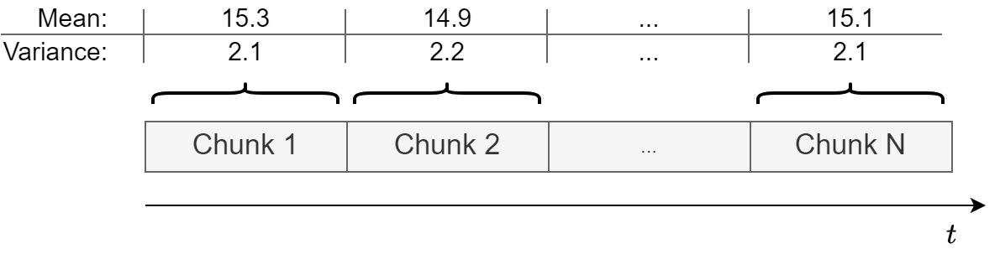
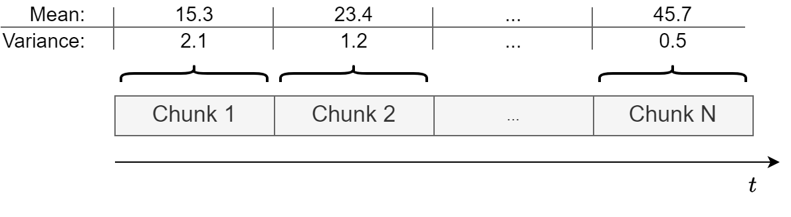

Stationarity#
Introduction#
Previously, we learned that time series is data that is measured at equally-spaced intervals.
We also learned that time series data can be decomposed into three parts: trend, seasonality, and residuals.
Now we’ll dig deeper by discussing an important concept called stationarity.
Having a firm grasp of this will lay the foundation necessary to understand more advanced modeling strategies that we’ll introduce later.
In this lecture we will cover
Definition of stationarity and examples of common stationary and nonstationary time series.
How to detect stationarity.
The most common ways to transform nonstationary time series into stationary ones.
Show code cell source
# Imports
import warnings
warnings.filterwarnings('ignore')
from io import BytesIO
import requests
import numpy as np
import matplotlib.pyplot as plt
import pandas as pd
from scipy.integrate import quad
from statsmodels.tsa.arima_process import ArmaProcess
from statsmodels.tsa.stattools import adfuller
from statsmodels.tsa.seasonal import seasonal_decompose
np.random.seed(0) # Reproducibility
Stationary Time Series#
Why is stationarity important?#
Stationarity is a fundamental assumption in many time series forecasting models.
Without it many basic time series models would break.
Transformations can be applied to convert a nonstationary time series to a stationary one.
There are advanced time series models that can handle nonstationary data (beyond the scope of this lecture).
What is stationarity?#
💡 Intuition: a time series is stationary when there are no changes in the underlying system that generates it.
In the following, we define:
Strict stationarity.
Weak stationarity.
Things to check in practice.
Strict stationarity#
A stochastic process \(X(t): t \in \mathcal{T}\) is called strictly stationary if, for all \(t_1, t_2, \dots, t_n \in \mathcal{T}\) and \(h\) such that \(t_1+h, t_2+h, \dots, t_n+h \in \mathcal{T}\), it holds that
where \(\stackrel{\text{D}}{=}\) indicates that the distributions are equal.
In plain words, the joint distribution of any set of observations in the series remains the same regardless of the time at which the observations are taken.
Strict stationarity is very difficult to verify, especially from a limited amount of data.
For this reason, one checks the Weak stationarity.
Weak stationarity#
A time series \(X\) is weakly stationary if:
The mean is constant over time \(\mathbb{E}[X(t)] = m, \;\; \forall t \in \mathcal{T}\)
The variance is finite \(\mathbb{E}[X(t)^2] < \infty, \;\; \forall t \in \mathcal{T}\)
The covariance of \(X(t)\) and \(X(t+h)\) depends only on \(h\), i.e., is shift-invariance in time.
Strict stationarity + condition 2 \(\implies\) weak stationarity
Things to check in practice.#
Constant mean (no trend).
Constant variance (no heteroskedasticity).
Constant autocorrelation structure.
No periodic component (✋ careful here)
Mean, variance, and periodic component (aka seasonality) should be familiar from the previous lecture.
Autocorrelation may not be.
Let’s start with a simple example of a stationary time series.
Let’s create an utility function to make plots.
def run_sequence_plot(x, y, title, xlabel="Time", ylabel="Values", ax=None):
if ax is None:
_, ax = plt.subplots(1,1, figsize=(10, 3.5))
ax.plot(x, y, 'k-')
ax.set_title(title)
ax.set_xlabel(xlabel)
ax.set_ylabel(ylabel)
ax.grid(alpha=0.3)
return ax
First, we create a variable
timethat defines equally-spaced time intervals.Then we’ll sample values from a Normal distribution with a mean of 0 and a standard deviation of 1.
Essentially we’re creating white noise, which is a stationary time series as it exhibits all the properties required of a stationary time series.
T = 200
time = np.arange(T)
stationary = np.random.normal(loc=0, scale=1.0, size=(T))
ax = run_sequence_plot(time, stationary, title="Stationary TS")
ax.plot(time, np.ones_like(time)*np.mean(stationary), linewidth=2, color='tab:red', label='Mean');
ax.fill_between(time, np.ones_like(time)*(stationary.mean()-1.96*stationary.std()),
np.ones_like(time)*(stationary.mean()+1.96*stationary.std()),
color='tab:red', alpha=0.2, label='std')
plt.legend();
We can easily check that the white noise has constant mean, constant variance, and no periodicity.
What about the autocorrelation?
Autocorrelation#
Autocorrelation measures how much the current time series measurement is correlated with a past measurement.
For example, today’s temperature is often highly correlated with yesterday’s temperature.
To discuss these things we must introduce the idea of a lag, i.e., a delay.
Say you wanted to know if today’s temperature correlates more with yesterday’s temperature or the temperature from two days ago.
You could test this by computing the correlation between the original time series and the same series delayed 1 time step.
The second value of the original time series would be compared with the first of the delayed time series.
The third original value would be compared with the second of the delayed.
And so on.
Performing this process for a lag of 1 and a lag of 2, respectively, would yield two correlation outputs.
This output would tell you which lag is more correlated.
The process is usually repeated for \(N\) different lags.
Autocorrelation often results in a pattern, whereas a time series without autocorrelation looks random.
The covariance of \(X(t_1)\) and \(X(t_2)\) is called autocovariance and is slightly different from the autocorrelation.
Autocorrelation:
Autocovariance:
\(\mu_{t_1}\) and \(\mu_{t_2}\) are the means of the time series at times \(t_1\) and \(t_2\), respectively.
If \(X(t)\) has zero-mean, autocorrelation and autocovariance coincide.
Since obtaining a time series with zero-mean is trivial, we’ll use the two terms interchangeably.
Assumption #3 in weak stationarity requires the time series to have constant (time-independent) autocovariance.
If the autocovariance remains constant throughout the series, a simple transformation can be used to remove it.
This will be useful for several future models.
Example: constant autocorrelation
Time series of daily temperature in a specific location over a year.
If this location has a very stable climate, the day-to-day changes in temperature might be minimal and consistent throughout the year.
Then, the autocorrelation would be relatively constant.
E.g., the correlation between today’s temperature and tomorrow’s temperature is roughly the same as the correlation between the temperature 30 days ago and 29 days ago.
Example: time-varying autocorrelation
Time series representing the daily stock prices of a particular company.
Stock prices can be influenced by market trends, company performance, economic indicators, world events, etc…
Here, the autocorrelation might be time-dependent.
E.g., during a period of market stability, the stock prices might show a consistent pattern over time (e.g., a steady increase).
However, during a market upheaval or a significant company event (like a product launch or a scandal), the pattern could change dramatically.
Constant vs non-constant autocorrelation#
Consider two time series \(X\) and \(Y\).
In \(X\) the autocorrelation is constant over time.
In \(Y\) the autocorrelation changes after 100 steps.
We will use an AR process for this example (more details on AR later on).
ar1 = np.array([1, -0.8])
ma1 = np.array([1])
AR_object1 = ArmaProcess(ar1, ma1)
constant_autocorr_ts = AR_object1.generate_sample(nsample=200)
run_sequence_plot(time, constant_autocorr_ts,
title="Time series with constant autocorrelation ($X$)");
ar2 = np.array([1, -0.9])
AR_object2 = ArmaProcess(ar2, ma1)
ar3 = np.array([1, 0.3])
AR_object3 = ArmaProcess(ar3, ma1)
time_dependent_autocorr_ts_1 = AR_object2.generate_sample(nsample=100)
time_dependent_autocorr_ts_2 = AR_object3.generate_sample(nsample=100)
time_dependent_autocorr_ts = np.concatenate([time_dependent_autocorr_ts_1,
time_dependent_autocorr_ts_2])
run_sequence_plot(time, time_dependent_autocorr_ts,
title="Time series with time-dependent autocorrelation ($Y$)");
Notice how the first half of \(Y\) shows a stronger autocorrelation.
Each value is heavily influenced by its immediate predecessor, leading to a smooth and predictable pattern.
The second part is characterized by a weaker autocorrelation.
The time series is more erratic and less influenced by its past values.
Common stationary and nonstationary time series#
If the analytic expression of the time series is known, it is possible to check the conditions for stationarity.
In practice, the process generating the time series might be unknown and we’ll need other tools to check stationarity.
Starting the analysis by looking at the
run_sequence_plotis an excellent starting point.
White noise#
We already looked at this time series and conclude that mean and variance are constant and there is no seasonal component.
In addition, since the value of each time step is drawn independently, there is no correlation.
run_sequence_plot(time, stationary, title="White noise");
Random walk#
The random walk is one of the most important nonstationary time series.
It is defined as:
where \(\epsilon_t\) are called innovations and are iid, e.g., \(\epsilon_t \sim \mathcal{N}(0,\sigma^2)\).
Let’s create a random walk.
# seed to start series
seed = 3.14
# Random Walk
rand_walk = np.empty_like(time, dtype='float')
for t in time:
rand_walk[t] = seed + np.random.normal(loc=0, scale=2.5, size=1)[0]
seed = rand_walk[t]
run_sequence_plot(time, rand_walk, title="Random Walk");
Notice how the current value is highly correlated with the past values and fluctuates much less than the white noise.
The random walk is nonstationary.
Why 🤔?
Dependence on Initial Value
The value of the series at any point in time depends on its initial value and the sum of all previous innovations.
Clearly, this path dependence denotes nonstationarity.
Changing variance
In a random walk, the variance changes over time.
This violates condition #2 of weak stationarity.
In particular, the variance increases linearly as time progresses because the effects of the innovations accumulate.
Let’s see this in detail.
We start at \(t = 0\) and we let \(X(0) = 0\) for simplicity.
At \(t = 1\) we have:
\(X(1) = X(0) + \epsilon_1\).
Variance: \(\text{Var}(X(1)) = \text{Var}(\epsilon_1) = \sigma^2\).
At \(t = 2\) we have:
\(X(2) = X(1) + \epsilon_2 = X(0) + \epsilon_1 + \epsilon_2\).
Since \(\epsilon_1\) and \(\epsilon_2\) are independent we get :
\[\text{Var}(X(2)) = \text{Var}(\epsilon_1 + \epsilon_2) = \text{Var}(\epsilon_1) + \text{Var}(\epsilon_2) = \sigma^2 + \sigma^2 = 2\sigma^2\]
At a general time \(t\) we have:
\(X(t) = X(t-1) + \epsilon_t = X(0) + \epsilon_1 + \epsilon_2 + \ldots + \epsilon_t\).
Again, using the independence of the \(\epsilon\) terms and the fact that each has variance \(\sigma^2\) we get:
\[\text{Var}(X(t)) = \text{Var}(\epsilon_1) + \text{Var}(\epsilon_2) + \ldots + \text{Var}(\epsilon_t) = t\sigma^2\]
Time series with trend#
Consider the following data.
trend = (time * 2.75) + stationary
run_sequence_plot(time, trend, title="Nonstationary data with trend");
Is this data stationary?
No, the mean changes over time and violates condition #1.
Heteroscedastic time series#
level_1 = np.random.normal(loc=0, scale=1.0, size = 100)
level_2 = np.random.normal(loc=0, scale=10.0, size = 100)
heteroscedasticity = np.append(level_1, level_2)
run_sequence_plot(time, heteroscedasticity, title="Heteroscedastic time series");
Is this data stationary?
No, the variance changes over time.
Time series with seasonality#
seasonality = 20 + np.sin(2*np.pi*time/12)*20
run_sequence_plot(time, seasonality, title="Time series with seasonality");
Is this time series stationary?
The mean of a periodic signal over a complete cycle always assumes the same value (
20in our case).However, over an half-cycle or any period not equal to an integer multiple of the full cycle, the mean changes (is different from
20).This violates condition #1.
Time series with trend and seasonality#
trend_seasonality = trend + seasonality + stationary
run_sequence_plot(time, trend_seasonality, title="Time series with trend and seasonality");
Is this data not stationary?
No, the mean changes over time because of the trend AND there is a periodic component.
Sinusoidal signal with random phase#
Consider the sinusoidal signal
where \(\mu\) is the mean, \(R\) is the amplitude, \(\lambda\) is the frequency, and \(\psi\) is the phase uniformly distributed over the range \([- \pi, \pi]\).
Is this a periodic signal?
Does it satisfy the conditions for weak stationarity?
Due to the periodic and symmetric nature of the sine function, when \(\psi\) is uniformly distributed over \([-\pi, \pi]\), every value of \(\psi\) that leads to a positive value is balanced by a corresponding value of \(\psi\) that leads to a negative value of the same magnitude.
This balance means that \(\mathbb{E}\big[ \sin(\lambda t + \psi) \big]=0\), therefore:
The mean of \(\mu + R \sin(\lambda t + \psi)\) is \(\mu\), which is constant.
Condition #1 is satisfied ✌
Let’s verify it also with code.
# Arbitrarily set the coefficients
R = 1.3
lamb = 3.5
t = 4
# Function to integrate
def func(psi):
return R*np.sin(lamb*t + psi)
# Perform the numerical integration over the interval [-pi, pi]
mean, _ = quad(func, -np.pi, np.pi) # Change the interval to get an expectation != 0
print(mean)
8.346123392671214e-16
The variance of a random variable \(X\) given by:
Let’s first consider \(\sin(\lambda t + \psi)\) for which we know \(\mathbb{E}[\sin(\lambda t + \psi)] = 0\)
The variance simplifies to:
Since \(\psi\) is uniformly distributed over \([- \pi, \pi]\), the pdf of \(\psi\) is:
Therefore, the variance of \(\sin^2(\lambda t + \psi)\) is:
For any \(x\), we have that \(\int_{-\pi}^{\pi} \sin^2(x) dx = \pi\)
This, gives us:
It is easy to see that \(\text{Var}[\mu + R\sin(\lambda t + \psi)]\) is \(\frac{R^2}{2}\).
We conclude that the variance is finite and constant.
Also condition #2 is satisfied ✌
R = 3
lamb = 6.5
t = 4
def func_sin2(psi):
return ((R*np.sin(lamb*t + psi))**2) / (2*np.pi)
# Perform the numerical integration
variance, _ = quad(func_sin2, -np.pi, np.pi)
print(variance)
4.499999999999999
The autocovariance function for a lag \(h\) is defined as:
Since \(X(t) = \mu + R \sin(\lambda t + \psi)\), the autocovariance becomes:
Now, we use the trigonometric identity:
Applying this identity, we get:
The expectation is taken over the random variable \(\psi\).
Following the same reasoning we did for the mean, \(\cos(2\lambda t + 2\psi + \lambda \tau)\) averages out to zero because \(\psi\) is uniformly distributed over \([- \pi, \pi]\).
Thus:
So, the autocovariance function depends only on the lag \(h\) and is independent of time \(t\).
Also condition #3 is satisfied ✌.
In conclusion, the time series \(X(t) = \mu + R \sin(\lambda t + \psi)\) is weakly stationary:
its mean is constant,
its variance is constant,
its autocovariance depends only on the lag \(h\).
How does \(X(t) = \mu + R \sin(\lambda t + \psi)\) looks like?
R = 1.3
lamb = 3.5
phi = np.random.uniform(-np.pi, np.pi, len(time))
cyc = R * np.sin(lamb * time + phi)
run_sequence_plot(time, cyc, title="Sinusoidal time series with random phase");
📨 Take-away message
A time series obtained from a periodic function might be weakly stationary.
The presence of periodic functions is not explicitly stated in the 3 conditions.
Be careful when you determine weak stationarity based on periodic components.
Detecting stationarity#
Next, we will review practical techniques used to identify if a time series is stationary or not.
Specifically, we will cover:
Run-sequence plots
Summary statistics
Augmented Dickey-Fuller test
Run-Sequence Plots#
Run-sequence plots allows to visualize what’s happening with the data.
This should always be your starting point.
Indeed, that is what we have been doing so far with our function
run_sequence_plot.It often shows whether there is an underlying structure.
Be on the lookout for trend, seasonality, and autocorrelation.
Summary Statistics#
An easy way to check for constant mean and variance is to chop up the data into separate chunks.
Then, one calculates statistics for each chunk, and compare them.
Large deviations in either the mean or the variance among chunks might indicate that the time series is nonstationary.
It’s not a rigorous method but gives a good hint of whether the data is approximately stationary or not.
This is how a stationary time series looks like.
This is how a non-stationary time series looks like.
Let’s look at an example based on the
trendtime series that we created before.
# split data into 10 chunks
chunks = np.split(trend, indices_or_sections=10)
Summary statistics:
print("{}\t | {}\t\t | {}".format("Chunk", "Mean", "Variance"))
print("-" * 35)
for i, chunk in enumerate(chunks, 1):
print("{:2}\t | {:.5}\t | {:.5}".format(i, np.mean(chunk), np.var(chunk)))
Chunk | Mean | Variance
-----------------------------------
1 | 26.694 | 241.23
2 | 81.181 | 255.62
3 | 135.73 | 258.47
4 | 190.77 | 257.08
5 | 246.55 | 257.82
6 | 301.62 | 259.15
7 | 356.19 | 249.28
8 | 411.09 | 244.11
9 | 466.14 | 245.37
10 | 520.99 | 275.11
While the variance is relatively constant over time, the mean is clearly changing, which means this data is not stationary.
We do expect some fluctuation in values.
It’s unlikely that mean and variance will be exactly the same in all chunk, but they should be close.
To see this better, it’s a good idea to plot the means and variances.
If you want to be more precise, you could run a statistical test to determine if the difference in means or the difference in variances is statistically significant.
Augmented Dickey-Fuller Test#
This is a statistical procedure to determine whether a time series is stationary or not.
We will discuss more details about the test in the next lectures.
For now, that’s what we need to know:
Null hypothesis: \(H_0\): the series is nonstationary.
Alternative hypothesis: \(H_A\): the series is stationary.
Like any statistical test you should set a significance level or threshold that determines whether you should accept or reject the null.
The values \(\alpha=0.05\) or \(\alpha=0.01\), which yield a confidence of \(95\%\) and \(99\%\), respectively, are common choices.
Example: \(p = 0.0001 \rightarrow\) reject \(H_0 \rightarrow\) the time series is stationary
Example: \(p = 0.43 \rightarrow\) fail to reject \(H_0 \rightarrow\) the time series is non-stationary
The ADF test might be inaccurate with small datasets or when heteroskedasticity is present.
It is best to pair ADF with other techniques (run-sequence plots, summary statistics, histograms, etc..).
Stationary Data & ADF#
Let’s see how to run this test in Python.
adf, pvalue, usedlag, nobs, critical_values, icbest = adfuller(stationary)
Let’s see and comment the main outputs from the ADF test.
print(f"ADF: {adf:.2f}")
ADF: -13.56
First,
adfis the value of the test statistic.The more negative the value, the more confident we can be that the series is stationary.
Here we see a negative value.
That may not mean anything to you just yet but
pvalueshould.
print(f"p-value: {pvalue}")
p-value: 2.300172138070688e-25
The
pvalueis interpreted like any p-value.The
pvalueshould be compared with the confidence levels (e.g., \(\alpha=0.05\) or \(\alpha=0.01\)).Based on the comparison, we reject or fail to reject \(H_0\).
Here
pvalueis very close to zero so we reject the \(H_0\) in favor of \(H_A\) and conclude that the time series is stationary.
print(f"nobs: {nobs}")
nobs: 199
The variable
nobsis simply the number of observations in the time series.
print(f"critical values: {critical_values}")
critical values: {'1%': -3.4636447617687436, '5%': -2.8761761179270766, '10%': -2.57457158581854}
Finally,
critical_valuesare the test statistic thresholds for common significant levels.Here we see a test statistic lower than -2.87 is sufficient to reject \(H_0\) at a significance level of 5%.
You may have noticed two outputs we didn’t discuss.
See statsmodels docs for a description of
usedlagandicbest.
ADF on time series with trend#
Next, we run the ADF test on the
trendtime series.
adf, pvalue, usedlag, nobs, critical_values, icbest = adfuller(trend, regression='c')
print(f"ADF: {adf:.2f}")
print(f"p-value: {pvalue:.3f}")
ADF: 0.82
p-value: 0.992
As expected, we fail to reject \(H_0\) that the
trendtime series is nonstationary.
ADF on random walk#
Finally, we run the ADF test on the
rand_walktime series.
adf, pvalue, usedlag, nobs, critical_values, icbest = adfuller(rand_walk, regression='c')
print(f"ADF: {adf:.2f}")
print(f"p-value: {pvalue:.3f}")
ADF: -1.03
p-value: 0.741
As we discussed before, the random walk is nonstationary because its variance \(\sigma^2t\) is not constant over time.
In the next section, we’ll learn how to make this time series stationary.
Good news 😎. At this point, we have several tools at our disposal to figure out if a time series is stationary or not.
Common transformations to achieve stationarity#
There are several ways to transform nonstationary time series data:
Transformation |
Effect |
|---|---|
Subtract trend |
Constant mean |
Apply log |
Constant variance |
Differencing |
Remove autocorrelation |
Seasonal differencing |
Remove periodic component |
Sometimes you’ll have to do multiple transformations on the same dataset.
Note that this is just a small subset of the total possible ways to transform nonstationary time series.
Subtract estimated trend & seasonality#
Let’s run the ADF test before transforming.
adf_b4, pvalue_b4, _, _, _, _ = adfuller(trend_seasonality)
print(f"ADF: {adf_b4:.2f}")
print(f"p-value: {pvalue_b4:.3f}")
ADF: 1.01
p-value: 0.994
Nonstationary as expected.
Next, we apply the decomposition.
ss_decomposition = seasonal_decompose(x=trend_seasonality, model='additive', period=12)
est_trend = ss_decomposition.trend
est_seasonal = ss_decomposition.seasonal
est_residual = ss_decomposition.resid
run_sequence_plot(time, est_trend, title="Trend", ylabel="series");
run_sequence_plot(time, est_seasonal, title="Seasonality", ylabel="series");
run_sequence_plot(time, est_residual, title="Residuals", ylabel="series");
Let’s look at the residual values.
print(est_residual[:20])
print('...')
print(est_residual[-20:])
[ nan nan nan nan nan nan
1.24368173 -2.62651313 -0.10234455 -0.73531189 -0.1829664 2.04130761
-0.65755141 -0.46722156 0.39903068 0.38172731 2.54722749 -0.46031003
1.15158029 -2.95123128]
...
[-0.68317918 -1.30938778 0.15957658 -3.17218197 2.33379231 -1.80387318
-0.33741986 0.1581179 0.82029446 3.25311048 -1.70643665 0.83606969
-1.55215866 -2.8317032 nan nan nan nan
nan nan]
We’ll have to remove the first \(6\) and last \(6\) values to run an ADF test since those are
nan.The number 6 is due to the fact that the method applies seasonal differencing and we specified
period=12.Here’s how to do that and run the test all in one call.
adf_after, pvalue_after, _, _, _, _ = adfuller(est_residual[6:-6])
print(f"ADF: {adf_after:.2f}")
print(f"p-value: {pvalue_after:.3f}")
ADF: -6.61
p-value: 0.000
Now the time series is stationary ✌.
Stabilize variance with log transform#
This trick is useful when dealing with heteroskedastic data.
The log squashes the parts of the time series where the variance is higher.
In this way, the variance becomes more uniform.
Let’s plot again the heteroskedastic times series to remember how it looks.
run_sequence_plot(time, heteroscedasticity, title="Heteroskedastic time series");

Let’s run the ADF test.
adf_b4, pvalue_b4, _, _, _, _ = adfuller(heteroscedasticity)
print(f"ADF: {adf_b4:.2f}")
print(f"p-value: {pvalue_b4:.3f}")
ADF: -2.49
p-value: 0.118
ADF is saying we cannot reject \(H_0\) in favor of the alternative (the time series is stationary).
Let’s now apply the log transformation.
Before that, we subtract the minimum and add a small constant
In this way we ensure that all values are positive before taking the log.
# Ensure all data are positive
new_hetero = heteroscedasticity - heteroscedasticity.min() + 1.0
# Apply the log
log_new_hetero = np.log(new_hetero)
run_sequence_plot(time, log_new_hetero, title="Log heteroskedastic time series");
Look at the values on the \(y\) axis.
Notice how the variance has collapsed to a large extent.
Let’s compute again the ADF test:
adf_log, pvalue_log, _, _, _, _ = adfuller(log_new_hetero)
print(f"ADF: {adf_log:.2f}")
print(f"p-value: {pvalue_log:.3f}")
ADF: -3.27
p-value: 0.016
We now see that the p-value decreased quite a lot.
We still cannot reject \(H_0\) at confidence level \(\alpha=0.01\), but we can at \(\alpha=0.05\).
Removing autocorrelation with differencing#
Remember that the ADF test (correctly) indicated that the
rand_walktime series is nonstationary.We can transform
rand_walkinto stationary time series by applying differencing.This is done by subtracting a past value from the current value.
We know that
rand_walkwas created with a lag of 1.So, a stationary time series can be obtained as:
difference = rand_walk[1:] - rand_walk[:-1]
run_sequence_plot(time[:-1], difference, title="Random walk after differencing");
Let’s run ADF on the differenced data.
adf_after, pvalue_after, _, _, _, _ = adfuller(difference)
print(f"ADF: {adf_after:.2f}")
print(f"p-value: {pvalue_after:.3f}")
ADF: -14.60
p-value: 0.000
Now it’s stationary!
Let’s see another example.
We create a small dataframe from 1-10 (linear and squared).
df = pd.DataFrame([[x for x in range(1,11)], [x**2 for x in range(1,11)]]).T
df.columns = ['original', 'squared']
df
| original | squared | |
|---|---|---|
| 0 | 1 | 1 |
| 1 | 2 | 4 |
| 2 | 3 | 9 |
| 3 | 4 | 16 |
| 4 | 5 | 25 |
| 5 | 6 | 36 |
| 6 | 7 | 49 |
| 7 | 8 | 64 |
| 8 | 9 | 81 |
| 9 | 10 | 100 |
Make stationary the first time series (
original) so that mean and variance don’t change for sub-windows.
df.original.diff().to_frame("1st order difference")
| 1st order difference | |
|---|---|
| 0 | NaN |
| 1 | 1.0 |
| 2 | 1.0 |
| 3 | 1.0 |
| 4 | 1.0 |
| 5 | 1.0 |
| 6 | 1.0 |
| 7 | 1.0 |
| 8 | 1.0 |
| 9 | 1.0 |
💡 NOTE: This is similar to taking a first-order derivative.
df.squared.diff().diff().to_frame("2nd order difference")
| 2nd order difference | |
|---|---|
| 0 | NaN |
| 1 | NaN |
| 2 | 2.0 |
| 3 | 2.0 |
| 4 | 2.0 |
| 5 | 2.0 |
| 6 | 2.0 |
| 7 | 2.0 |
| 8 | 2.0 |
| 9 | 2.0 |
Notice that we need to differentiate twice on the exponential time series.
Every time we do differencing we lose a bit of data.
We can also try to make stationary the second time series (
squared) with log.
np.log(df.squared).to_frame("log")
| log | |
|---|---|
| 0 | 0.000000 |
| 1 | 1.386294 |
| 2 | 2.197225 |
| 3 | 2.772589 |
| 4 | 3.218876 |
| 5 | 3.583519 |
| 6 | 3.891820 |
| 7 | 4.158883 |
| 8 | 4.394449 |
| 9 | 4.605170 |
Works somewhat but certainly not as well as differencing.
In general we do not know the optimal lag to perform differencing.
How to determine the optimal order of differentiation will be covered later on.
Seasonal differentiation#
Consider a time series with a seasonality of period \(L\).
There will be a strong correlation between \(X(t)\) and \(X(t+L)\).
Seasonal differentiation can remove the seasonality and make the time series stationary:
After seasonal differencing the time series will become \(L\) steps shorter.
Note that we can perform the standard differentiation in cascade to seasonal differentiation if we need to remove also the trend on top of the seasonality.
Let’s see this on the
trend_seasonalitytime series.
trend_seasonality_d12 = (trend_seasonality[:-12]
- trend_seasonality[12:]) # remove seasonality
trend_seasonality_d12_d1 = (trend_seasonality_d12[:-1]
- trend_seasonality_d12[1:]) # remove trend
# Plot the differenced time series
run_sequence_plot(time[:-13], trend_seasonality_d12_d1, title="Seasonal + 1st order differencing");
adf_after, pvalue_after, _, _, _, _ = adfuller(trend_seasonality_d12_d1)
print(f"ADF: {adf_after:.2f}")
print(f"p-value: {pvalue_after:.3f}")
ADF: -5.28
p-value: 0.000
Summary#
In this lecture we learned:
What does it mean for a time series to be stationary.
A set of notable stationary and nonstationary time series.
Common tools to identify stationarity.
Useful nonstationary-to-stationary transformations.
Exercises#
Exercise 1#
Load the two time series
stationarity_ts1andstationarity_ts2by running the code below.
# Load the first time series
response = requests.get("https://zenodo.org/records/10897398/files/stationarity_ts1.npy?download=1")
response.raise_for_status()
stationarity_ts1 = np.load(BytesIO(response.content))
print(len(stationarity_ts1))
# Load the second time series
response = requests.get("https://zenodo.org/records/10897398/files/stationarity_ts2.npy?download=1")
response.raise_for_status()
stationarity_ts2 = np.load(BytesIO(response.content))
print(len(stationarity_ts2))
100
100
Plot the two time series with a run sequence plot.
Based on the plot, discuss if each time series seems to be stationary or not.
Exercise 2#
Use the following tools to determine if the time series stationarity_ts1 and stationarity_ts2 are stationary or not.
Summary statistics on the chunks.
Augmented Dickey-Fuller test.
Discuss the result obtained with each method.
Exercise 3#
If either or both datasets from exercises one and two are nonstationary, apply the transformations you learned in this section to make them so. Then apply the methods you learned to ensure stationarity.